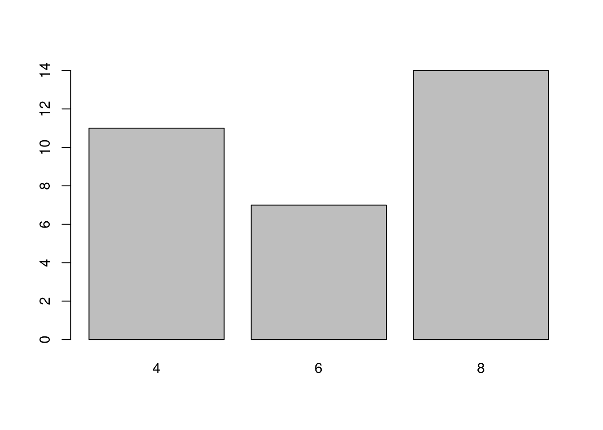

plot(mtcars$mpg)15 Graphics
Through out this chapter, we use certain notations for different components in R. To begin, when something is in a gray block, _, this indicates that R code is being used. When I am talking about an R Object, it will be displayed as a word. For example, we will be using the R object mtcars. When I am talking about an R function, it will be displayed as a word followed by an open and close parentheses. For example, we will use the mean function denoted as mean() (read this as “mean function”). When I am talking about an R argument for a function, it will be displayed as a word following by an equal sign. For example, we will use the data argument denoted as data= (read this as “data argument”). When I am referencing an R package, I will use :: (two colons) after the name. For example, in this tutorial, I will use the ggplot2:: (read this as “ggplot2 package”) Lastly, if I am displaying R code for your reference or to run, it will be displayed on its own line. There are many components in R, and my hope is that this will help you understand what components am I talking about.
15.1 Base R Plotting
15.1.1 Introduction
This tutorial provides an introduction on how to create different graphics in R. For this tutorial, we will focus on plotting different components from the mtcars data set.
15.1.2 Contents
Basic
Grouping
Tweaking
15.1.3 Basic Graphics
Here we will use the built-in R functions to create different graphics. The main function that you will use is the plot(). It contains much of the functionality to create many different plots in R. Additionally, it works well for different classes of R objects. It will provide many important plots that you will need for a certain statistical analysis.
15.1.4 Scatter Plot
Let’s first create a scatter plot for one variable using the mpg variable. This is done using the plot() and setting the first argument x= to the vector.
Notice that the x-axis is the index (which is not informative) and the y-axis is the mpg values.
Let’s connect the points with a line. This is done by setting the type= to "l".
plot(mtcars$mpg, type = "l")Let’s add the points back to the plot and keep the lines. What we are going to do is first create the scatter plot as we did before, but we will also use the lines() to add the lines. The lines() needs the x= which is a vector of points (mpg). The two lines of code must run together.
plot(mtcars$mpg)
lines(mtcars$mpg)Now, let’s create a more realistic scatter plot with 2 variables. This is done by specifying the y= with another variable in addition to the x= in the plot=. Plot a scatter plot between mpg and disp.
plot(mtcars$mpg,mtcars$disp)Now, let’s change the the axis labels and plot title. This is done by using the arguments main=, xlab=, and ylab. The main= changes the title of the plot.
15.1.5 Histogram
To create a histogram, use the hist(). The hist() only needs x= which is numerical vector. Create a histogram with the mpg variable.
hist(mtcars$mpg)
If you want to change the number of breaks in the histogram, use the breaks=. Create a new histogram of the mpg variable with ten breaks.
hist(mtcars$mpg, breaks = 10)
The above histograms provide frequencies instead of relative frequencies. If you want relative frequencies, use the freq= and set it equal to FALSE in the hist().
hist(mtcars$mpg, freq = FALSE)15.1.6 Density Plot
A density plot can be used instead of a histogram. This is done by using the density() to create an object containing the information to create density function. Then, use the plot() to display the plot. The only argument the density() needs is the x= which is the data to be used. Create a density plot the mpg variable.
plot(density(mtcars$mpg))
Now, if we want to overlay the density function over a histogram, use the lines() with the output from the density() as its main input. First create the histogram using the hist() and setting the freq= to FALSE. Then use the lines() to overlay the density. Make sure to run both lines together.
hist(mtcars$mpg, freq = FALSE)
lines(density(mtcars$mpg))15.1.7 Box Plots
A commonly used plot to display relevant statistics is the box plot. To create a box plot use the boxplot(). The function only needs the x= which specifies the data to create the box plot. Use the box plot function to create a box plot on for the variable mpg.
boxplot(mtcars$mpg)
If you want to make the box plot horizontal, use horizontal= and set it equal to TRUE.
boxplot(mtcars$mpg, horizontal = TRUE)15.1.8 Bar Chart
A histogram shows you the frequency for a continuous variable. A bar chart will show you the frequency of a categorical or discrete variable. To create a bar chart, use the barplot(). The main argument it needs is the height= which needs to an object from the table(). Create a bar chart for the cyl variable.
barplot(table(mtcars$cyl))
15.1.9 Pie Chart
While I do not recommend using a pie chart, R is capable of creating one using the pie(). It only needs the x= which is a vector numerical quantities. This could be the output from the table(). Create a pie chart with the cyl variable.
pie(table(mtcars$cyl))15.1.10 Grouping
Similar to obtaining statistics for certain groups, plots can be grouped to reveal certain trends. We will look at a couple of methods to visualize different groups.
15.1.10.1 One Variable Grouping
Two ways to display groups is by using color coding or panels. I will show you what I think is the best way to group variables. There may be better ways to do this, such as using the ggplot2 package. Before we begin, create three new R objects that are a subset of the mtcars data set into 3 different data sets with for the three different values of the cyl variable: “4”, “6”, and “8”. use the subset() to create the different data sets. Name the new R objects mtcars_4, mtcars_6, and mtcars_8, respectively.
mtcars_4 <- subset(mtcars, cyl == 4)
mtcars_6 <- subset(mtcars, cyl == 6)
mtcars_8 <- subset(mtcars, cyl == 8)15.1.10.1.1 Scatter Plot
To create different colors points for their respective label associated cyl variable. First create a base scatter plot using the plot() to set up the plot. Then one by one, overlay a set of new points on the base plot using the points(). The first two arguments should be the vectors of data from their respective R object subset. Also, use the col= to change the color of the points. The col= takes either a string or a number.
plot(mtcars$mpg, mtcars$disp)
points(mtcars_4$mpg, mtcars_4$disp, col = "red")
points(mtcars_6$mpg, mtcars_6$disp, col = "blue")
points(mtcars_8$mpg, mtcars_8$disp, col = "green")15.1.10.1.2 Histogram
Now, it us more difficult to overlay histograms on a plot to different colors. Therefore, a panel approach may be more beneficial. This can be done by setting up R to plot a grid of plots. To do this, use the par() to tell R how to set up the grid. Then use the mfrow=, which is a vector of length two, to set up a grid. The mfrow= usually has an input of c(ROWS,COLS) which states the number of rows and the number of columns. Once this is done, the next plots you create will be used to populate the grid.
par(mfrow=c(1,3))
hist(mtcars_4$mpg)
hist(mtcars_6$mpg)
hist(mtcars_8$mpg)Every time you use the par(), it will change how graphics are created in an R session. Therefore, all your plots will follow the new graphic parameters. You will need to reset it by typing dev.off().
15.1.10.1.3 Bar Chart
To visualize two categorical variables, we can use a color-coded bar chart to compare the frequencies of the categories. This is simple to do with the barplot(). First, use the table() to create a cross-tabulation of the frequencies for two variables. Then use the boxplot() to visualize both variables. Then use legend= to create a label when the bar chart is color-coded. Additionally, use the beside= argument to change how the plot looks. Use the code below to compare the variables cyl and am variable.
barplot(table(mtcars$cyl, mtcars$am), beside = TRUE, legend = rownames(table(mtcars$cyl, mtcars$am)))Notice that I use the rownames() to label the legend.
15.1.11 Tweaking
15.1.11.1 Labels
The main tweaking of plots I will talk about is changing the the axis label and titles. For the most part, each function allows you to use the main=, xlab=, and ylab=. The main= allows you to change the title. The xlab= and ylab= allow you to change the labels for the x-axis and y-axis, respectively. Create a scatter plot for the variables mpg and disp and change the labels.
plot(mtcars$mpg, mtcars$disp, main = "MPG vs Displacement", xlab = "MPG", ylab = "Displacement")15.2 ggplot2
15.2.1 Introduction
The ggplot2:: provides a set of functions to create different graphics. For more information on plotting in ggplot2::, please visit the this excellent resource. Here we will discuss some of the basics to the ggplot2::``. To me,ggplot2::`creates a plot by adding layers to a base plot. The syntax is designed for you to change different components of a plot in an intuitive manner. For this tutorial, we will focus on plotting different components from thempg` data set.
15.2.1.1 Contents
Basic
Grouping
Themes/Tweaking
15.2.2 Basics
To begin, the ggplot2:: really works well when you are using data frames. If you have any output that you want to plot, convert into to a data frame. Once we have our data set, the first thing you would want to do is specify the main components of your base plot. This will be what will be plotted on your x-axis, and what will be plotted on your y-axis. Next, you will create the the type of plot. Lastly, you will add different layers to tweak the plot for your needs. This can be changing the layout or even overlaying another plot. The `ggplot2::`` provides you with tools to do almost everything you need to create a plot easily.
Before we begin plotting, load the ggplot2:: in R.
library(ggplot2)Now, when we create a base plot, we will use the ggplot(). This will initialize the data that we need to use with the data= and how to map it on the x and y axis with the mapping=. With the mapping=, you will need to use the aes() which constructs the mapping function for the base plot. The aes() requires the x= and optionally uses the y= to set which values represents the x and y axis. The aes() also accepts other arguments for grouping or other aesthetics.
Before we begin, create a new variable in mtcars called ind and place a numeric vector which contains integers from 1 to 32.
mtcars$ind <- c(1:32)Now, let’s create the base plot and assign it to gg_1. Use the ggplot() and set mtcars as its data and the variable ind as x= and mpg as the y=
gg_1 <- ggplot(mtcars, aes(ind, mpg))This base plot is now used to create certain plots. Plots are created by adding functions to the base plot. This is done by using the + operator and then a specific ggplot2:: function. Below we will go over some of the functions necessary.
15.2.3 Scatter Plot
To create a scatter plot in ggplot2::, add the geom_point() to the base plot. You do not need to specify any arguments in the function. Create a scatter plot to gg_1
gg_1 + geom_point()If we want to put lines instead of points, we will need to use the geom_point(). Change the points to a line.
gg_1 + geom_line()To overlay points to the plot, add geom_point() as well as geom_line(). Add points to the plot above.
gg_1 + geom_point() + geom_line()To create a 2 variable scatter plot. You will just need to specify the x= and y= in the aes(). Create a base plot using the mtcars data set and use the mpg and disp as the x and y variables, respectively, and assign in it to gg_2
gg_2 <- ggplot(mtcars, aes(mpg, disp))Now create a scatter plot using gg_2.
gg_2 + geom_point()15.2.4 Histogram and Density Plot
To create a histogram and density plots, create a base plot and specify the variable of interest in the aes(), only specify one variable. Create a base plot using the mtcars data set and the mpg variable. Assign it to gg_3.
gg_3 <- ggplot(mtcars, aes(mpg))To create a histogram, use the geom_histogram().
gg_3 + geom_histogram()`stat_bin()` using `bins = 30`. Pick better value with `binwidth`.
The above plot shows a histogram, but the number of bins is quite large. We can change the bin width argument, binwidth=, the the geom_histogram(). Change the bin width to seven.
gg_3 + geom_histogram(binwidth = 7)15.2.4.1 Density Plot
To create a density plot, use the geom_density(). Create a density plot for the mpg variable.
gg_3 + geom_density()15.2.4.2 Both
Similar to adding lines and points in the same plot, you can add a histogram and a density plot by adding both the geom_histogram() and geom_density(). However, in the geom_histogram(), you must add aes(y=..density..) to create a frequency histogram. Create a plot with a histogram and a density plot.
gg_3 + geom_histogram(aes(y=..density..),bins=7) +
geom_density()Warning: The dot-dot notation (`..density..`) was deprecated in ggplot2 3.4.0.
ℹ Please use `after_stat(density)` instead.15.2.5 Box Plots
If you need to create a box plot, use the stat_boxplot(). Create a boxplot for the variable mpg. All you need to do is add stat_boxplot().
gg_3 + stat_boxplot()15.2.6 Bar Charts
Creating a bar chart is similar to create a box plot. All you need to do is use the stat_count(). First create a base plot using the mtcars data sets and the cyl variable for the mapping and assign it to gg_4.
gg_4 <- ggplot(mtcars, aes(cyl))Now create the bar plot by adding the stat_count().
gg_4 + stat_count()15.2.7 Grouping
The `ggplot2::`` easily allows you to create plots from different groups. We will go over some of the arguments and functions to do this.
15.2.7.1 One Variable Grouping
15.2.7.1.1 Scatter Plot
To begin, we want to specify the grouping variable within the aes() with the color=. Additionally, the argument works best with a factor variable, so use the factor() to create a factor variable. Create a base plot from the mtcars data set using mpg and disp for the x and y axis, respectively, and set the color= equal to the factor(cyl). Assign it the R object gg_5.
gg_5 <- ggplot(mtcars, aes(mpg, disp, color=factor(cyl)))Once the base plot is created, `ggplot2::`` will automatically group the data in the plots. Create the scatter plot from the base plot.
gg_5 + geom_point()
If you want to change the shapes instead of the color, use the shape=. Create a base plot from the mtcars data set using mpg, and disp for the x and y axis, respectively, and group it by cyl with the shape=. Assign it the R object gg_6.
gg_6 <- ggplot(mtcars, aes(mpg, disp, shape=factor(cyl)))
gg_6 + geom_point()15.2.7.1.2 Histograms
Histograms can be grouped by different colors. This is done by using the fill= within the aes() in the base plot. Assign it the R object gg_7.
gg_7 <- ggplot(mtcars, aes(mpg, fill = factor(cyl)))Now create a histogram from the base plot gg_7.
gg_7 + geom_histogram(bins = 6, alpha = 0.3)
Sometimes we would like to view the histogram on separate plots. The facet_wrap() and the flact_grid() allows this. Using either function, you do not need to specify the grouping factor in the aes(). You will add facet_wrap() to the plot. It needs a formula argument with the grouping variable. Using the R object gg_3 create side by side plots using the cyl variable. Remember to add geom_histogram().
gg_3+geom_histogram() + facet_wrap( ~ cyl)`stat_bin()` using `bins = 30`. Pick better value with `binwidth`.15.2.7.1.3 Density Plot
Similar to histograms, density plots can be grouped by variables the same way. Using gg_7, create color-coded density plots. All you need to do is add geom_density().
gg_7 + geom_density(alpha=0.3)Using gg_3, create side by side density plots. You need to do is add geom_density() and facet_wrap() to group with the cyl variable.
gg_3 + geom_density() + facet_wrap( ~ cyl)15.2.7.1.4 Bar Chart
To create a side by side bar plot, you can use the facet_wrap() with a grouping variable. Using gg_4, create a side by side bar plot using vs as the grouping variable. Remember to add stat_count() as well.
gg_4 + stat_count() + facet_wrap(~vs)If you want to compare the bars from different group in one plot, you can use the fill= from the aes(). The fill= just needs a factor variable (use factor()). First create a base plot using the data mtcars, variable cyl and grouping variable vs. Assign it to gg_8.
gg_8 <- ggplot(mtcars, aes(cyl, fill = factor(vs)))Now create a bar chart by adding stat_count().
gg_8 + stat_count()If you want to grouping bars to be side by side, use the position= in the stat_count() and set it equal to "dodge". Create the bar plot using the position = "dodge".
gg_8 + stat_count(position = "dodge")15.2.8 Themes/Tweaking
In this section, we will talk about the basic tweaks and themes to ggplot2::. However. ggplot2:: is much more powerful and can do much more. Before we begin, lets look at object gg_9 to understand the plot. To view a plot, use the plot().
plot(gg_9)15.2.8.1 Title
To change the title, add the ggtitle() to the plot. Put the new title in quotes as the first argument. Change the title for gg_9.
gg_9 + ggtitle("Scatter Plot")15.2.8.2 Axis
Changing the labels for a plot, add the xlab() and ylab(), respectively. The first argument contains the phrase for the axis. Change the axis labels for gg_9.
gg_9 + xlab("MPG") + ylab("Displacement")15.2.8.3 Themes
If you don’t like how the plot looks, ggplot2:: has custom themes you can add to the plot to change it. These functions usually are formatted as theme_*(), where the * indicates different possibilities. I personally like how theme_bw() looks. Change the theme of gg_9.
gg_9 + theme_bw()Additionally, you can change certain part of the theme using the theme(). I encourage you to look at what are other possibilities.
15.2.9 Saving plot
If you want to save the plot, use the ggsave(). Read the help documentation for the functions capabilities.